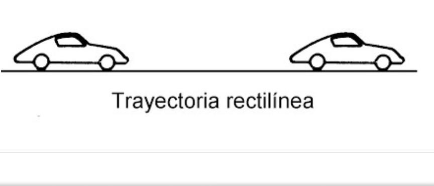
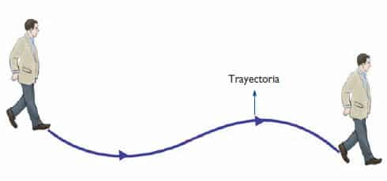
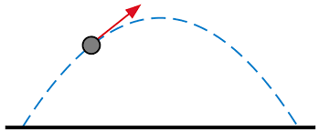
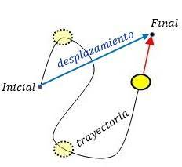
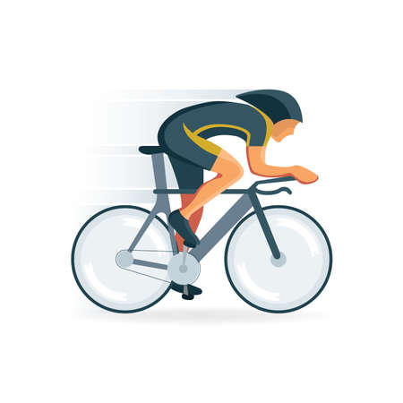

Para describir el movimiento de un objeto necesitamos responder a varias preguntas: ¿dónde está?, ¿por dónde pasó?, ¿cuánto recorrió?, ¿cuál fue su cambio neto de posición?
La posición es el lugar exacto que ocupa un objeto en un sistema de coordenadas en un instante dado. Por ejemplo, decimos que un auto está en el kilómetro 25 de una carretera.
La trayectoria es el camino que sigue el objeto mientras se mueve. Puede ser una línea recta, una curva, una parábola o una circunferencia.
 |
 |
 |
| Fig. 4: Trayectoria rectilínea | Fig. 5: Trayectoria curva | Fig. 4: Trayectoria parabólica |
La distancia recorrida es la suma de todas las longitudes del camino que el objeto ha seguido. Es una magnitud escalar: solo nos dice “cuánto” se recorrió, sin indicar dirección.
El desplazamiento es el cambio neto de posición del objeto, una magnitud vectorial que tiene magnitud, dirección y sentido.

Fig. 5: Desplazamiento y trayectoria
Ejemplo:
Imagina que un ciclista se mueve 300 metros al este y luego 400 metros al norte.
Distancia total recorrida = 700 metros.
Desplazamiento = √(300² + 400²) = 500 metros al noreste.

Fig. 6: Ciclista avanzando
jhkh